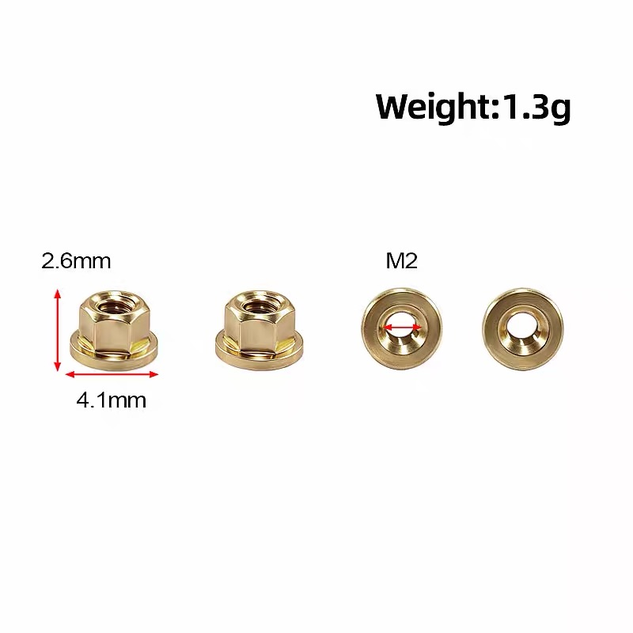

SCX30 輪胎與輪框怎麼選：尺寸、內襯、輪距一次看懂
原廠胎抓地不差但尺寸小。整理車友換胎心得：換大胎要先量輪拱、內襯決定胎壁支撐、Beadlock 黃銅輪框兼顧配重，以及加寬車橋帶來的穩定與代價。
輪胎是車子唯一接觸地面的地方。SCX30 原廠胎其實抓地力不錯，問題主要是尺寸小：約 34mm 高、0.7 吋輪框，遇到大一點的石頭，底盤就先碰到了。
先決定：維持原尺寸，還是換大胎？
- 原尺寸（約 34mm）：外觀最像原廠，不用修車殼，轉向不會打到輪拱。想要更好的泥地、草地表現，可以換塊狀胎紋
- 大胎（39～40mm）：離地高度增加，翻越障礙明顯更輕鬆。但要注意轉向打到底時會不會碰到車殼和保桿，部分車殼需要修剪輪拱
 MAVERIX M/T 輪胎 34×12mm（T7025）INJORA｜SCX30｜輪胎與海綿內襯NT$ 410看商品
MAVERIX M/T 輪胎 34×12mm（T7025）INJORA｜SCX30｜輪胎與海綿內襯NT$ 410看商品
 HAMROK 輪胎 39×15mm（T7027）INJORA｜SCX30｜輪胎與海綿內襯NT$ 410看商品
HAMROK 輪胎 39×15mm（T7027）INJORA｜SCX30｜輪胎與海綿內襯NT$ 410看商品
換大胎前，先把車殼裝上，轉向打到底、懸吊壓到底，看輪胎和輪拱之間還剩多少空間。
內襯：決定胎壁怎麼「站」
原廠海綿內襯用久了會塌，胎壁支撐不一致，上石頭時輪胎容易折進去。矽膠內襯支撐比較穩定，也比較不會變形。內襯尺寸要和輪胎高度對應：
- 34～36mm 輪胎：選 36mm 內襯
- 39～41mm 輪胎：選 40mm 內襯
- 軟的內襯讓胎面更貼合石頭，硬的支撐更好、適合重配重的車
 矽膠內襯（36～37mm 輪胎用）INJORA｜SCX30｜輪胎與海綿內襯NT$ 350看商品
矽膠內襯（36～37mm 輪胎用）INJORA｜SCX30｜輪胎與海綿內襯NT$ 350看商品
 矽膠內襯（39～41mm 輪胎用）INJORA｜SCX30｜輪胎與海綿內襯NT$ 350看商品
矽膠內襯（39～41mm 輪胎用）INJORA｜SCX30｜輪胎與海綿內襯NT$ 350看商品
輪框：Beadlock 加黃銅
Beadlock（夾胎式）輪框不用上膠，換胎、換內襯都方便。黃銅材質的輪框本身就是很好的配重，而且重量就在輪子上，是最低的位置。有車友在前輪輪框內加黃銅配重、換金屬輪框螺母，前輪抓地明顯改善。
 D19 黃銅 Beadlock 輪框（W7007 原色）INJORA｜SCX30｜輪框與配重環、螺母NT$ 790看商品
D19 黃銅 Beadlock 輪框（W7007 原色）INJORA｜SCX30｜輪框與配重環、螺母NT$ 790看商品

M2 黃銅輪框螺母OP｜SCX30｜輪框與配重環、螺母NT$ 90看商品加寬輪距：穩定，但要看代價
加寬車橋可以讓輪距變寬，側坡更不容易翻，也能讓大胎有更多空間。代價是轉向半徑會變大，部分車殼輪拱要修。
- +3mm：外觀變化小，多數車殼可直接裝
- +4.5mm：穩定度最好，轉向角也較大，但比較容易碰到車殼
 +3mm 加寬前後車橋組INJORA｜SCX30｜車橋相關配件NT$ 1,670看商品
+3mm 加寬前後車橋組INJORA｜SCX30｜車橋相關配件NT$ 1,670看商品
 +4.5mm 加寬前後車橋組INJORA｜SCX30｜車橋相關配件NT$ 1,890看商品
+4.5mm 加寬前後車橋組INJORA｜SCX30｜車橋相關配件NT$ 1,890看商品
本文整理自 Hooniverse SCX30 評測、RCTalk 論壇討論串與車友換胎分享，實際適配請以車殼與車況為準。
到山稜RC選物看更多零件